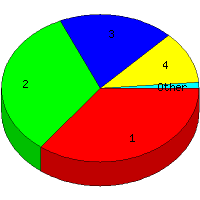

Week of 12/20/2009 to 12/26/2009: Top
5 of
5 File Types (Extensions)
Sorted by Access Count
Individual file types as determined by file extensions. All URLs that
do not contain an extension are counted as directories.

| Rank |
Type |
Accesses |
% |
Bytes |
% |
| 1 |
htm
|
28 |
35.44 |
99,727 |
15.54 |
| 2 |
Directory (folder)
|
26 |
32.91 |
68,250 |
10.63 |
| 3 |
gif
|
15 |
18.99 |
214,878 |
33.48 |
| 4 |
jpg
|
9 |
11.39 |
258,768 |
40.31 |
| 5 |
css
|
1 |
1.27 |
260 |
0.04 |